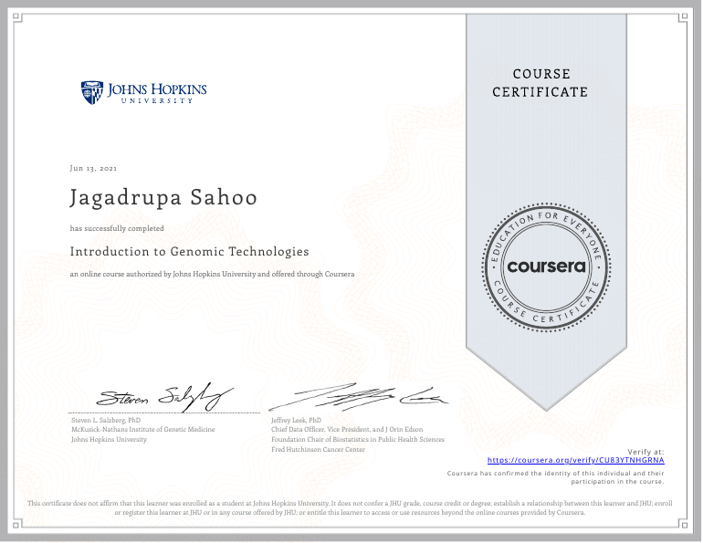

Certificates
Certificates and skills
Certified coursework since 2020: 22 certificates from 14 institutions, and 9 further courses audited.
Summary map
Neuroscience first, then the fields I bring to it. Select an area to open its branches; a branch with courses links to them below.
Certified and audited coursework, 2020 to 2026
Research at TUM, and certified and audited coursework
MSc at Manchester, research at TUM, an independent project and certified coursework
BSc (Hons) Biotechnology, Amity University, 2018 to 2021, and certified coursework
Certificates and courses
Select a card for the course details, the full certificate and the issuer's verification link. Audited courses are marked and carry no certificate.
Neuroscience
Fundamental neuroscience 1 certified · 3 audited
 Understanding the Brain: The Neurobiology of Everyday LifeThe University of Chicago · 13 Jul 2020AnatomyNeurologyPhysiologySensory Systems Analysis
Understanding the Brain: The Neurobiology of Everyday LifeThe University of Chicago · 13 Jul 2020AnatomyNeurologyPhysiologySensory Systems Analysis
Functional neuroanatomy, perception, movement and homeostasis.
Modules
- The nervous system
- Neural communication and embodied emotion
- Neuroanatomy
- Perception and vision
- Hearing
- The vestibular sense and gaze
- Voluntary movements
- Motor modulation
- Homeostasis
- Abstract function
Skills listed by the course
Audited
no certificateFundamentals of Neuroscience, Part 1: The Electrical Properties of the NeuronHarvardX · edX · MCB80.1xPhysiologyBiology
Lessons
- Resting potential
- Passive membrane properties
- Action potentials
- Action potential propagation
- DIY labs
Skills
Audited
no certificateFundamentals of Neuroscience, Part 2: Neurons and NetworksHarvardX · edX · MCB80.2xPhysiologyComplex NetworksElectronic Circuits
Lessons
- The synapse
- Excitation and inhibition
- Small circuits
- Neuromodulation
- Potentiation and depression
Skills
Audited
no certificateFundamentals of Neuroscience, Part 3: The BrainHarvardX · edX · MCB80.3xAnatomyPhysiologySensory Systems Analysis
Lessons
- Vision
- Audition
- Touch, taste, smell and the remaining senses
- Movement and action
- Subcortical brain areas
- Brain anatomy
Skills
Computational neuroscience 1 certified · 1 audited
 Computational NeuroscienceUniversity of Washington · 4 Sep 2026Network ModelMathematical ModelingReinforcement LearningSupervised Learning
Computational NeuroscienceUniversity of Washington · 4 Sep 2026Network ModelMathematical ModelingReinforcement LearningSupervised Learning
How neurons encode and decode information, and how networks compute and learn.
Modules
- Introduction and basic neurobiology
- Neural encoding models
- Neural decoding
- Information theory and neural coding
- Computing in carbon
- Computing with networks
- Plasticity in the brain and learning
- Learning from supervision and rewards
Skills listed by the course
Audited
no certificateComputational Neuroscience: Neuronal Dynamics of CognitionEPFLx · edX · BIO465.2xComputational NeuroscienceMathematics
Weeks
- Associative memory and the Hopfield model
- Attractor networks and spiking neurons
- Neuronal populations and mean-field theory
- Perception and cortical field models
- Decision making and competitive dynamics
- Synaptic plasticity and learning
Skills
Neuroimaging 5 certified
 Introduction to Neurohacking in RJohns Hopkins University · 13 Nov 2026Image AnalysisMedical ImagingR ProgrammingData Preprocessing
Introduction to Neurohacking in RJohns Hopkins University · 13 Nov 2026Image AnalysisMedical ImagingR ProgrammingData Preprocessing
Reading, visualising and processing structural brain images in R.
Modules
- Introduction
- Neuroimaging: formats and visualization
- Image processing
- Extended image processing
Skills listed by the course
 Principles of fMRI 2Johns Hopkins University · 13 Nov 2026Magnetic Resonance ImagingStatistical ModelingStatistical AnalysisData Analysis
Principles of fMRI 2Johns Hopkins University · 13 Nov 2026Magnetic Resonance ImagingStatistical ModelingStatistical AnalysisData Analysis
Advanced fMRI design and modelling, connectivity and multi-voxel pattern analysis.
Modules
- Psychological and behavioural inference, and advanced experimental design
- Advanced experimental design and advanced GLM modelling
- Brain connectivity
- Multi-voxel pattern analysis
Skills listed by the course
 Neuroscience and Neuroimaging Specialization (four courses)Johns Hopkins University · 13 Nov 2026Magnetic Resonance ImagingMedical ImagingImage AnalysisStatistical Analysis
Neuroscience and Neuroimaging Specialization (four courses)Johns Hopkins University · 13 Nov 2026Magnetic Resonance ImagingMedical ImagingImage AnalysisStatistical Analysis
All four Johns Hopkins courses: fundamental neuroscience, fMRI 1 and 2, and neurohacking in R.
Modules
- Fundamental Neuroscience for Neuroimaging
- Principles of fMRI 1
- Principles of fMRI 2
- Introduction to Neurohacking in R
Skills listed by the course
 Principles of fMRI 1Johns Hopkins University · 11 Nov 2026Magnetic Resonance ImagingStatistical AnalysisStatistical ModelingData Analysis
Principles of fMRI 1Johns Hopkins University · 11 Nov 2026Magnetic Resonance ImagingStatistical AnalysisStatistical ModelingData Analysis
How fMRI data are acquired, pre-processed and analysed with the General Linear Model.
Modules
- Introduction to fMRI, data acquisition and reconstruction
- The fMRI signal, experimental design and pre-processing
- The General Linear Model
- Group-level analysis and the multiple comparison problem
Skills listed by the course
 Fundamental Neuroscience for NeuroimagingJohns Hopkins University · 13 Jul 2020Magnetic Resonance ImagingMedical ImagingAnatomyResearch Design
Fundamental Neuroscience for NeuroimagingJohns Hopkins University · 13 Jul 2020Magnetic Resonance ImagingMedical ImagingAnatomyResearch Design
Structural and functional neuroanatomy, imaging methods and experimental design.
Modules
- Structural neuroanatomy of the human brain
- Functional neuroanatomy of the human brain
- Principles and methods of neuroimaging
- Experimental design and special applications in neuroimaging
Skills listed by the course
Psychology 3 certified
 The Psychology of Emotions: An Introduction to Embodied CognitionUniversity of Cambridge · 13 Nov 2026PsychologyResearch MethodologiesResearchNon-Verbal Communication
The Psychology of Emotions: An Introduction to Embodied CognitionUniversity of Cambridge · 13 Nov 2026PsychologyResearch MethodologiesResearchNon-Verbal Communication
How emotions are felt, studied and recognised in other people.
Modules
- What is cognitive psychology?
- How we feel emotions
- How do we study emotions?
- How do we recognise others' emotional facial expressions?
- Is it always easy to understand others' emotions?
Skills listed by the course
 The Neuropsychology of Decision MakingUniversity of Cambridge · 12 Nov 2026NeurologyAnatomyPhysiologyPsychology
The Neuropsychology of Decision MakingUniversity of Cambridge · 12 Nov 2026NeurologyAnatomyPhysiologyPsychology
Prefrontal cortex, neurotransmitters and the networks behind decisions.
Modules
- Introduction to neuroanatomy and neurodevelopment
- The importance of the prefrontal cortex
- Neurotransmitters, neurophysiology and decision networks
- Decision making styles and the role of childhood experiences
- Decision making deficits
Skills listed by the course
 Introduction to PsychologyYale University · 19 Jul 2020PsychologyLearning TheoryHuman LearningHuman Development
Introduction to PsychologyYale University · 19 Jul 2020PsychologyLearning TheoryHuman LearningHuman Development
The scientific study of thought and behaviour, from development to mental illness.
Modules
- Foundations: neuroscience, Freud, Skinner
- Development and language
- Cognition: perception, attention, memory
- Self and others: emotion, social psychology
- Variation: personality, intelligence, mental illness, therapy
- The good life: happiness
Skills listed by the course
Deep learning and machine learning
Machine learning 1 certified
Verified
on edXData Science: Building Machine Learning ModelsHarvardX · edX · 9 Jun 2026Machine LearningMachine Learning AlgorithmsPrincipal Component AnalysisRecommender Systems
Cross-validation, regularisation, common algorithms and a recommendation system, in R.
Modules
- The basics of machine learning
- Cross-validation to avoid overtraining
- Several popular machine learning algorithms
- Building a recommendation system
- Regularisation
Skills listed by the course
Keras and TensorFlow 2 audited
Audited
no certificateDeep Learning Fundamentals with KerasIBM · edXDeep LearningKerasArtificial Neural NetworksArtificial Intelligence
Modules
- Introduction to deep learning: biological and artificial neural networks, forward propagation
- Artificial neural networks: gradient descent, backpropagation, vanishing gradient, activation functions
- Deep learning libraries: regression and classification models with Keras
- Deep learning models: shallow and deep networks, convolutional and recurrent networks, autoencoders
Skills
Audited
no certificateDeep Learning with TensorFlow and KerasIBM · edXTensorFlowKerasConvolutional Neural NetworksTransformer Models
What the course covers
- Custom layers and models in Keras with TensorFlow 2.x
- Advanced convolutional neural networks
- Transformer models for sequential data and time series
- Unsupervised learning, deep Q-networks and reinforcement learning
Skills
PyTorch 3 audited
Audited
no certificatePyTorch Basics for Machine LearningIBM · edXPyTorchMachine LearningLinear RegressionLogistic Regression
What the course covers
- Build a machine learning pipeline in PyTorch
- Train models in PyTorch
- Load large datasets
- Use NumPy and Pandas with PyTorch
Skills
Audited
no certificateDeep Learning with Python and PyTorchIBM · edXPyTorchDeep LearningConvolutional Neural NetworksArtificial Neural Networks
What the course covers
- Deep neural networks and related machine learning methods
- Build and train deep neural networks using PyTorch
- Build deep learning pipelines
Skills
Audited
no certificateApplied Deep Learning Capstone ProjectIBM · edXDeep LearningPyTorchKerasData Preprocessing
What the course covers
- Choose a deep learning method for a given problem
- Build a deep learning model for a real problem
- Create a deep learning pipeline
- Improve models using real data
- Present the outcomes of a deep learning project
Skills
Bioinformatics
Genomic data science 7 certified
 Gut Check: Exploring Your MicrobiomeUniversity of Colorado Boulder and University of California San Diego · 3 Jan 2024MicrobiologyImmunologyNutrition and DietData Analysis
Gut Check: Exploring Your MicrobiomeUniversity of Colorado Boulder and University of California San Diego · 3 Jan 2024MicrobiologyImmunologyNutrition and DietData Analysis
The human gut microbiome, how it is studied and what it means for health.
Modules
- Introduction to microbes and the human microbiome
- Studying the microbiome
- Making sense out of microbial data
- The human gut microbiome and your health
- Gut microbe-host interactions: beyond nutrition
- What's in the American Gut
Skills listed by the course
 Algorithms for DNA SequencingJohns Hopkins University · 2 Mar 2023BioinformaticsAlgorithmsData StructuresPython Programming
Algorithms for DNA SequencingJohns Hopkins University · 2 Mar 2023BioinformaticsAlgorithmsData StructuresPython Programming
String matching, indexing and assembly algorithms for sequencing reads, in Python.
Modules
- DNA sequencing, strings and matching
- Preprocessing, indexing and approximate matching
- Edit distance, assembly, overlaps
- Algorithms for assembly
Skills listed by the course
 Big Data, Genes, and MedicineThe State University of New York · 23 Feb 2023BioinformaticsPredictive ModelingClassification AlgorithmsR Programming
Big Data, Genes, and MedicineThe State University of New York · 23 Feb 2023BioinformaticsPredictive ModelingClassification AlgorithmsR Programming
Finding differentially expressed genes and predicting disease from expression data, in R.
Modules
- Genes and data
- Preparing datasets for analysis
- Finding differentially expressed genes
- Predicting diseases from genes
- Determining gene alterations
- Clustering and pathway analysis
Skills listed by the course
 Python for Genomic Data ScienceJohns Hopkins University · 23 Feb 2023BioinformaticsPython ProgrammingData StructuresComputer Programming
Python for Genomic Data ScienceJohns Hopkins University · 23 Feb 2023BioinformaticsPython ProgrammingData StructuresComputer Programming
Python programming applied to sequence data.
Skills listed by the course
 Genomic Data Science with GalaxyJohns Hopkins University · 4 Jul 2021BioinformaticsData AnalysisBig DataData Quality
Genomic Data Science with GalaxyJohns Hopkins University · 4 Jul 2021BioinformaticsData AnalysisBig DataData Quality
Reproducible genomic analysis on the Galaxy platform.
Skills listed by the course

Introduction to Genomic TechnologiesJohns Hopkins University · 13 Jun 2021BioinformaticsMolecular BiologyBiologyStatistical Analysis
The measurement, computing and data science behind modern genomics.
Modules
- Overview
- Measurement technology
- Computing technology
- Data science technology
Skills listed by the course
 COVID19 Data Analysis Using Python (guided project)Coursera Project Network · 8 Jan 2021Python ProgrammingData AnalysisData VisualizationStatistical Analysis
COVID19 Data Analysis Using Python (guided project)Coursera Project Network · 8 Jan 2021Python ProgrammingData AnalysisData VisualizationStatistical Analysis
A guided project: cleaning, merging and correlating public COVID-19 datasets.
Skills listed by the course
Biotechnology
Applied biotechnology 4 certified
 Personalised Medicine from a Nordic PerspectiveUniversity of Copenhagen and University of Iceland · 21 Feb 2023Precision MedicineMedical Science and ResearchClinical ResearchHealthcare Ethics
Personalised Medicine from a Nordic PerspectiveUniversity of Copenhagen and University of Iceland · 21 Feb 2023Precision MedicineMedical Science and ResearchClinical ResearchHealthcare Ethics
Biomarkers, genetics and omics in personalised medicine, with its evidence, ethics and communication.
Modules
- Introduction to personalised medicine
- Health information used in personalised medicine
- Biomarkers, genetics and omics
- Evidence and documentation for clinical efficacy
- Communication in personalised medicine
- Ethical, legal and social aspects
Skills listed by the course
 Industrial BiotechnologyUniversity of Manchester · 22 Jun 2020BiotechnologyPharmaceuticalsProcess EngineeringSustainable Technologies
Industrial BiotechnologyUniversity of Manchester · 22 Jun 2020BiotechnologyPharmaceuticalsProcess EngineeringSustainable Technologies
Enzyme engineering, synthetic biology and bioprocessing, with industrial case studies.
Modules
- Enzymes, enzyme discovery and engineering
- Methods in systems and synthetic biology
- Biochemical and bioprocess engineering
- Pharmaceuticals and fine chemicals
- Case studies: bioenergy and biomaterials
- Case studies: glycoscience and biotherapeutics
Skills listed by the course
 Drug DiscoveryUniversity of California San Diego · 7 Jun 2020Drug DevelopmentPharmacologyClinical TrialsPharmaceuticals
Drug DiscoveryUniversity of California San Diego · 7 Jun 2020Drug DevelopmentPharmacologyClinical TrialsPharmaceuticals
How a drug moves from target and compound selection to preclinical studies and delivery.
Modules
- Pharmaceutical and biotechnology industry landscape
- Drug discovery: proteomics, genomics
- Compound selection and preclinical studies
- Fragment-based drug discovery for protein kinases
- Key concepts in drug delivery
Skills listed by the course
 The Science of Stem CellsAmerican Museum of Natural History · 6 Jun 2020Cell BiologyBiologyPrecision MedicineMedical Science and Research
The Science of Stem CellsAmerican Museum of Natural History · 6 Jun 2020Cell BiologyBiologyPrecision MedicineMedical Science and Research
What stem cells are, and how they are used to study and treat disease.
Modules
- Introduction to stem cells
- Using stem cells to study disease
- Using stem cells to treat disease
- The bioethics of stem cell research and therapy
Skills listed by the course